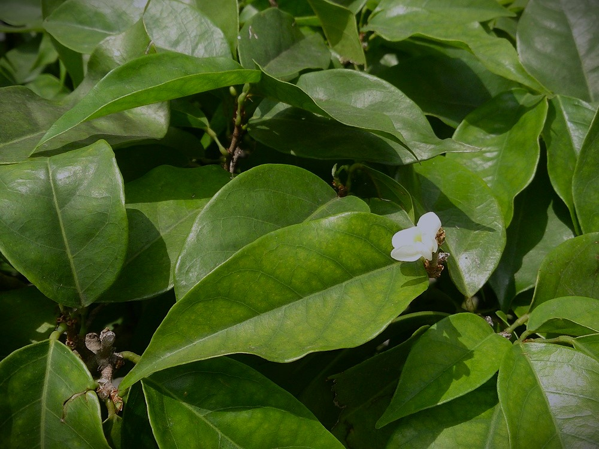
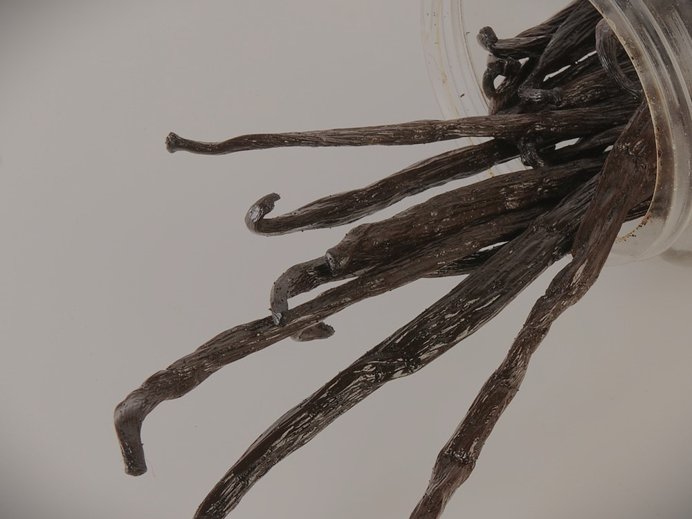
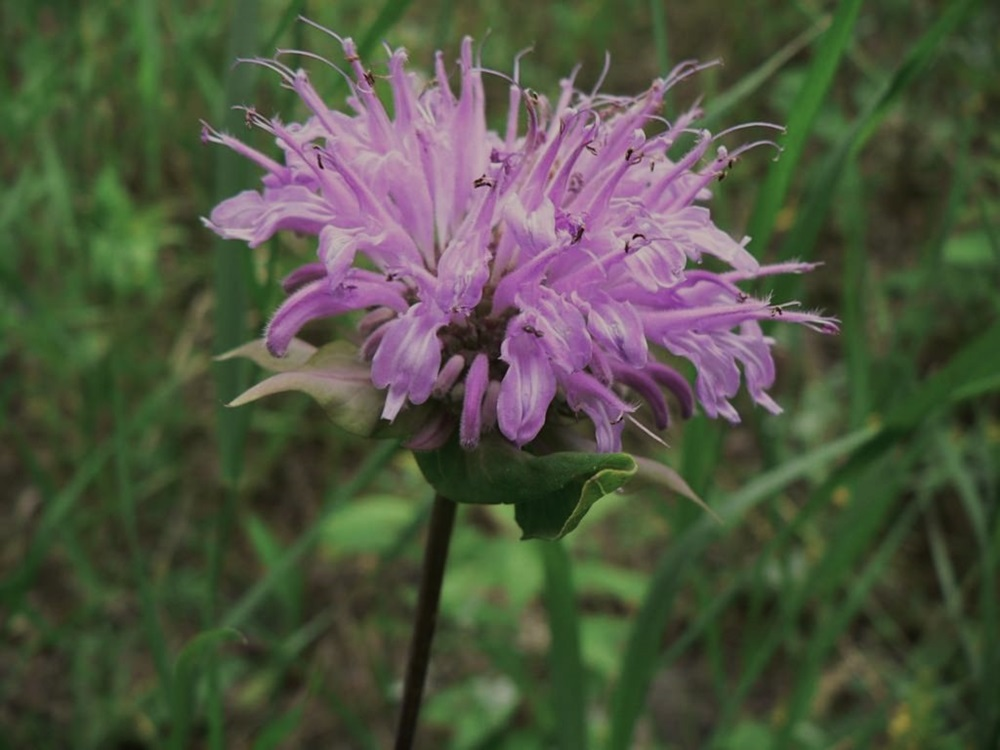

The Most Famous Ingredients
There might be scents that you might want to use, it is because it suits your personality or it is because it is one of the famous scents in your community. Here are the lists of scents that are considered as well-known through choices and preference

Sandalwood
This plant is natively found on India and some parts of Asia. It is famous to its fascinating warm and woody smell.

Vanilla
This is one of the oldest ingredients use in this list. It is way back from Mesoamerice era that this scent has started its debut in perfume. It is known for its sweet floral scent.

Bergamot
This plant is natively grown from the lands of Southeast Asia. Its oil extract is known for its ctirusy smell with a touch of floral fragrance texture.